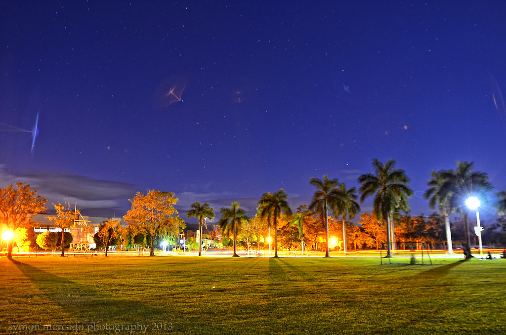

"Welcome to the charming city of San Carlos, nestled in the heart of Negros Occidental, Philippines. Known affectionately as the 'Sugar Bowl of Negros,' this vibrant city is a delightful blend of cultural richness, scenic landscapes, and warm hospitality. As you explore its streets, you'll discover a community that thrives on the synergy of urban development and the serenity of rural life.

La Vista Highland Resort is recognized for its breathtaking panoramic views of the surrounding mountains and landscapes. It offers a serene and relaxing retreat for visitors, making it a popular destination for both locals and tourists. The resort typically features well-designed accommodations, leisure facilities, and amenities to enhance the overall guest experience.

La Vista Highland Resort is recognized for its breathtaking panoramic views of the surrounding mountains and landscapes. It offers a serene and relaxing retreat for visitors, making it a popular destination for both locals and tourists. The resort typically features well-designed accommodations, leisure facilities, and amenities to enhance the overall guest experience.